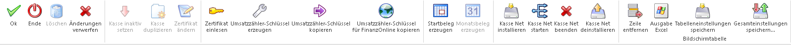
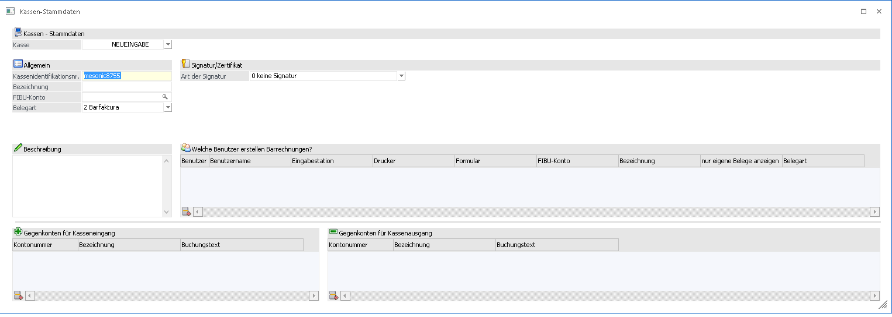
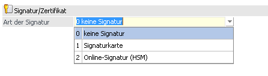
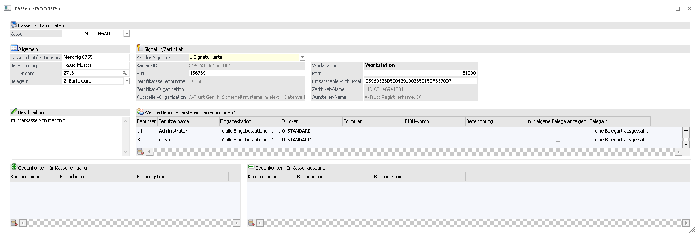
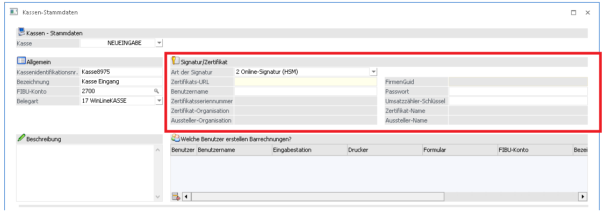

In den Kassen-Stammdaten, welche in der WinLine FAKT unter…
1 WinLine FAKT
1 Stammdaten
1 Kassen-Stammdaten
… aufgerufen werden können, können die Stammdaten hinterlegt werden, die benötigt werden, um einen Kassenarbeitsplatz betreiben zu können.
Buttons

Ø Ok
Bestätigt bzw. speichert alle vorgenommenen Einstellungen bei der ausgewählten Kasse. Anschließend werden alle Eingabefelder initialisiert.
Ø Ende
Verlässt das Fenster ohne bereits vorgenommene Einstellungen zu übernehmen.
Ø Löschen
Löscht die gerade ausgewählte Kasse komplett aus den Kassen-Stammdaten. Dieser Button kann nur bei Kassen angewählt werden, welche noch keinen Eintrag im Datenerfassungsprotokoll besitzen, also jene, die auch noch keinen Startbeleg erzeugt haben.
Ø Änderungen Verwerfen
Verwirft alle vorgenommenen Einstellungen und initialisiert alle Felder und die gewählte Kasse.
Ø Kasse inaktiv setzen
Mithilfe dieses Buttons kann die gerade ausgewählte Kasse inaktiv gesetzt werden. Beim inaktiv setzen wird für die gewählte Kasse ein Schlussbeleg erzeugt.
Hinweis
Fall eine Kasse inaktiv gesetzt wird, welche noch keinen Startbeleg erzeugt hat wird auch kein Schlussbeleg erzeugt.
Ø Kasse duplizieren
Bei Anwahl dieses Buttons kann die ausgewählte Kasse mit allen schon vorhandenen Einstellungen dupliziert werden. In diesem Vorgang kann auch zeitgleich die Ausgangskasse inaktiv gesetzt werden, falls dies erwünscht ist.
Hinweis
Wenn eine Kasse dupliziert wird, kann die vorherige Kasse mit bestätigen der Meldung direkt inaktiv gesetzt werden. In diesem Fall wird für die Kasse welche inaktiv gesetzt wird, ein Schlussbeleg erzeugt.
Ø Zertifikat ändern
Wenn diese Funktion aktiviert wird, werden die Felder "Art der Signatur", "PIN" und Port wieder wählbar. Diese Funktion muss vor dem Einlesen eines neuen Zertifikats aktiviert werden, falls für diese Kasse schon zuvor ein Zertifikat eingelesen wurde.
Ø Zertifikat einlesen
Wenn eine Kasse mit Signatur angelegt wird, kann mithilfe dieses Buttons die gewählte Signaturart (Chipkarten- oder Online-Signatur) eingelesen werden. Wenn das Einlesen der Zertifikats erfolgreich ist, werden die gegrauten Felder automatisch mit den Werten des Zertifikats befüllt. (z.B.: Zertifikatsseriennummer)
Ø Umsatzzähler-Schlüssel erzeugen
Erzeugt automatisch einen 32 stelligen Code der als Verschlüsselung des Umsatzzählers gilt.
Ø Umsatzzähler-Schlüssel kopieren
Der Umsatzzähler Schlüssel wird in die Zwischenablage von Windows kopiert.
Ø Umsatzzähler-Schlüssel für FinanzOnline kopieren
Wandelt den Umsatzzählerschlüssel in einen base64 kodierten 44-stelligen Code um und stellt diesen in die Zwischenablage. Dieser Code muss bei FinanzOnline bei der Kassenanmeldung eingegeben werden.
Ø Startbeleg erzeugen
Erzeugt für die gewählt Kasse einen Startbeleg. Dieser Startbeleg generiert eine Zeile im DEP mit Betrag 0,- und muss entweder mittels der Handy Applikation "BMF Belegcheck" überprüft werden oder mittels XML-Meldung an FinanzOnline übergeben werden. Es kann jeweils nur ein Startbeleg pro angelegter Kasse generiert werden.
Ø Monatsbeleg erzeugen
Erzeugt einen Monatsbeleg, welcher eine Zeile mit Betrag 0,- im DEP generiert und ist jeweils am Monatsletzten bzw. Monatsbeginn durchzuführen.
Hinweis
Ab der Version 10.3 mit dem Build 10003.5 werden Monatsbelege automatisch erzeugt, falls diese nicht bereits manuell erstellt wurden. Bei der Erstellung des ersten Belegs im neuen Monat wird geprüft, ob der letzte DEP-Eintrag ein Monatsbeleg ist, andernfalls wird dieser automatisch erzeugt und gedruckt.
Ø Kasse Net installieren
Installiert auf dieser Workstation den Dienst "MesoRKSV Server" der zur Signaturerstellung notwendigen ist. Dieser dienst muss auf jener Workstation/Server laufen, welcher den Kartenleser inkl. Karte angesteckt hat.
Ø Kasse Net starten
Startet den Dienst "MesoRKSV Server".
Ø Kasse Net beenden
Beendet den Dienst "MesoRKSV Server".
Ø Kasse Net deinstallieren
Deinstalliert den Dienst " MesoRKSV Server".
Installation von KASSE net:
Wenn eine gültige Lizenz der KASSE net vorhanden ist, kann diese Funktion über den Ribbon-Button "Kasse Net installieren" installiert werden. Dieser Button installiert auf diesen Computer den Dienst "MesoRKSV Server". Mithilfe des Buttons "Kasse Net starten" kann anschließend dieser Dienst gestartet werden. Ab diesem Zeitpunkt sollte, falls der in den Kassen-Stammdaten eingetragene Port freigegeben wurde, über jede Workstation signiert werden können, welche sich im selben Netzwerk befindet.
Die Buttons der Kasse Net sind nur aktiv, wenn eine gültige Lizenz der "KASSE net" eingespielt wurde.

Ø Kassenidentifikationsnummer
Hier muss eine eindeutige Nummer hinterlegt werden.
Ø Bezeichnung
Bezeichnung der Kasse
Ø FIBU-Konto
Hinterlegung eines referenzierenden FIBU-Kontos (muss als Zahlungsmittelkonto definiert sein), auf das auch die Barrechnugns-Buchungen getätigt werden.
Ø Belegart
Hier kann die Standardbelegart hinterlegt werden, mit der die Barrechnungen abgearbeitet werden sollen.
Ø Beschreibung
In diesem Feld kann eine zusätzliche Beschreibung der Kasse hinterlegt werden.
Signatur/Zertifikat

Zunächst muss die Art der Signatur gewählt werden. Abhängig davon werden unterschiedliche Eingabefelder zur Verfügung gestellt.
0 - Keine Signatur
Diese Option kann beim Anlegen einer Kasse gewählt werden, wenn diese z.B. nicht in Österreich verwendet wird und somit Belege welche mit dieser Kasse erfasst werden, nicht signiert werden müssen.
Hinweis
Beim Update von WinLine Version 10.2 auf WinLine Version 10.3 wird eine schon vorhandene Kasse mit dieser Option übernommen. Wenn für Kassen mit der Option "Keine Signatur" bereits Belege vorhanden sind, kann diese Option nachträglich nicht abgeändert werden. Die Kasse muss anschließend Inaktiv gesetzt werden und kann im diesen Zuge direkt mit allen vorherigen Einstellungen kopiert und die Kassen-ID verändert werden.
1 - Signaturkarte

Ø Karten ID:
Wird beim Einlesen der Zertifikats automatisch befüllt
Ø PIN:
Der bei der Karte hinterlegte PIN-Code muss in dieses Feld eingetragen werden, damit die Signierung erfolgreich am Beleg vollzogen werden kann
Ø Zertifikatsseriennummer:
Hier ist nach erfolgreichen Einlesens des Zertifikats die Seriennummer des Zertifikats ersichtlich, welche auch bei der Anmeldung der Signaturerstellungseinheit beim Finanz Online gebraucht wird.
Ø Zertifikat-Organisation:
In diesem Feld wird die Organisation welche das Zertifikat verwaltet, dargestellt.
Ø Aussteller-Organisation:
Anhand dieses Eintrags kann die Ausstellende Organisation der Zertifikatseinheit eingesehen werden.
Ø Workstation:
Beim Einlesen der Signatur wird hier automatisch die gerade verwendete Workstation eingetragen und diese wird als Zugriffspunkt der Signatureinheit verwendet.
Ø Port:
Hier wird der Port eingetragen, welcher für die Erstellung des Zertifikats verwendet wird. Dieser wird standardmäßig mit Port 51000 vorbelegt.
Ø Umsatzzähler-Schlüssel:
Hier muss ein 32-stelliger Code eingegeben werden. Dieser Dient zur Verschlüsselung des Umsatzzählers im Datenerfassungsprotokoll. Dieser Code kann mittels Ribbon-Button "Umsatzzähler-Schlüssel erzeugen", erzeugt werden.
Ø Zertifikat-Name:
Hier ist nach dem Einlesen des Zertifikats der Name des eingelesenen Zertifikats zu sehen.
Ø Aussteller-Name:
Hier ist nach dem Einlesen des Zertifikats der Name des Ausstellers des Zertifikats zu sehen.
2. Online-Signatur (HSM)

Ø Zertifikats-URL:
Hier muss vom Zertifikatsaussteller die Internetadresse (URL) hinterlegt werden, auf welche beim Signieren von Belegen zugegriffen wird.
Ø Benutzername:
Beim Zertifikatsaussteller muss auch ein Benutzernamen für die Signierung vorhanden sein. Dieser Benutzername muss hier eingetragen werden.
Ø Zertifikatsseriennummer:
Hier ist nach erfolgreichen Einlesens des Zertifikats die Seriennummer des Zertifikats ersichtlich, welche auch bei der Anmeldung der Signaturerstellungseinheit beim Finanz Online gebraucht wird.
Ø Zertifikat-Organisation:
In diesem Feld wird die Organisation welche das Zertifikat verwaltet, dargestellt.
Ø Aussteller-Organisation:
Anhand dieses Eintrags kann die Ausstellende Organisation der Zertifikatseinheit eingesehen werden.
Ø FirmenGUID:
Wird ausschließlich für eine HSM Anmeldung in Verbindung mit Global Trust benötigt. Diese Feld wird erst freigeschalten, wenn das Programm eine gültige URL von Global Trust erkennt.
Ø Passwort:
Das beim HSM Zertifikat hinterlegte Password muss hier eingetragen werden.
Ø Umsatzzähler-Schlüssel:
Hier muss ein 32-stelliger Code eingegeben werden. Dieser Dient zur Verschlüsselung des Umsatzzählers im Datenerfassungsprotokoll. Dieser Code kann mittels Ribbon-Button "Umsatzzähler-Schlüssel erzeugen", erzeugt werden.
Ø Zertifikat-Name:
Hier ist nach dem Einlesen des Zertifikats der Name des eingelesenen Zertifikats zu sehen
Ø Aussteller-Name:
Hier ist nach erfolgreichem Einlesen des Zertifikats der Name des Ausstellers des Zertifikats ersichtlich
Welche Benutzer erstellen Barrechnungen?
In diesem Bereich kann definiert werden, welche Benutzer mit "Kassenarbeitsplätzen" arbeiten sollen. Folgende Einstellungen können hinterlegt werden:
Ø Benutzer
Hier kann der Benutzer eingetragen werden, der Barrechnungen erstellen kann. Über die Matchcode-Funktion kann nach allen angelegten Benutzern gesucht werden. Mit Auswahl eines Benutzers wird auch der Benutzername in die Tabelle mit übernommen.
Ø Eingabestation
Hier kann eingestellt werden, auf welcher Eingabestation dieser benutzten Barrechnungen erfassen darf. Es werden hier alle Workstations der Installation inkl. MWL aufgelistet. Mit der Option "<alle Eingabestationen >" kann der Benutzer auf allen installierten Arbeitsplätzen Barrechnungen erfassen.
Ø Drucker
Mit dieser Option kann gewählt werden, welchen Drucker dieser Benutzer beim Erfassen der Barrechnungen ansprechen soll.
Ø Formular
Wenn ein Formular bei einem Benutzer hinterlegt ist, wird dieses für den Ausdruck der Barrechnungen sowie für den Belegstorno verwendet.
Ø FIBU-Konto
Hier kann ein abweichendes FIBU Konto hinterlegt werden, auf welches dieser Benutzer beim Abschließen der Barrechnungen bucht. Diese Einstellung übersteuert das FIBU-Konto welches bei der Zahlungsart hinterlegt ist.
Ø Bezeichnung
Bei der Bezeichnung kann ein Text hinterlegt werden, welcher für die Belege im Kassendashboard automatisch verwendet und hochgezählt wird (z.B.: "Kasse 2 - " wird hochgezählt auf "Kasse 2 - 1").
Ø nur eigene Belege anzeigen
Wenn diese Option bei einem Benutzer gesetzt ist, werden diesem Benutzer bei den geparkten Belegen im Kassendashboard nur Belege angezeigt, welche dieser Benutzer erfasst bzw. zuletzt bearbeitet hat.
Die Gegenkonten für Kasseneingang und Kassenausgang können für den Menüpunkt
1 Erfassen
1 Kassen-Eingang/Ausgang
in der WinLine FAKT hinterlegt werden.
Wenn hier Konten hinterlegt werden, werden diese beim Öffnen des Menüpunkts vorgeschlagen und können nur diese für Ein- und Ausgänge verwendet werden. Falls hier keine Konten hinterlegt werden, können im oben genannten Menüpunkt alle Konten verwendet werden.
Hinweis
Erfolgte Buchungen über den Menüpunkt "Kassen-Eingang/Ausgang" werden nicht ins Datenerfassungsprotokoll übergeben da es sich nicht um Gewinn- bzw. Verlustbringende Umsätze handelt.